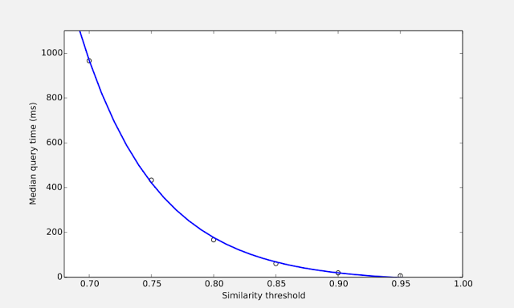
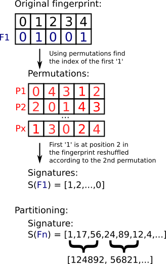
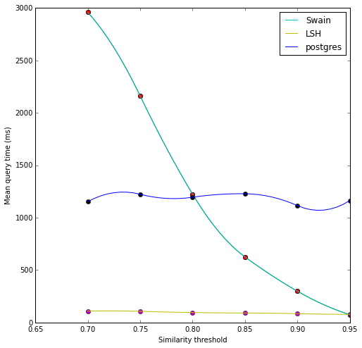
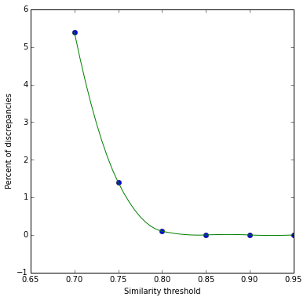

Locality-sensitive
hashing
UniChem search
Sheffield feedback
Michał Nowotka
ChEMBL Group
EMBL-EBI
Searching in MongoDB
History
- David Suvee (StratMed)
- Pruning rules, originally described by Swamidass and Baldi
T * Lq <= L <= Lq / T- Rajarshi Guha
- Matt Swain (reproducible code snippets)
The problem
Time complexity!

The solution
Locality-sensitive hashing (LSH)
LSH differs from conventional and cryptographic hash functions because it aims to maximize the probability of a “collision” for similar items.
LSH
- Hashes input items so that similar items map to the same “buckets” with high probability
- Reduces the dimensionality of high-dimensional data
- Has much in common with data clustering
- Very popular in audio fingerprinting (Shazam)
How it works?

Improved time complexity

Accuracy?

Accuracy cd

Possible improvements
- Generating permutations for LSH
- Checking different types of fingerprints
- Investigating how performance/accuracy changes in a function of number of permutations and buckets
- Experimenting with different database engines including relational ones
Searching UniChem
Challenges
- 140M structures is a big data
- Substructure/similarity search in seconds?
- Generating structures from InChI
Possible solutions
- Oracle + Biovia Direct
- Postgres + Bingo
- Chemfp + LSF
- LSH + Bloom filter
Biovia Direct: pros
- Currently used solution - well known
- DBAs support (?)
- Biovia support
- Mature, stable, well documented software
Biovia Direct: cons
- Expensive (Oracle instances + Biovia licenses)
- Not open source (prices can increase, nothing for the community)
- Largest known DB has 85M structures
- Parallelization can be costly
- DBA policy recommends Oracle -> Postgres switch
Biovia Direct: challenges
- Chemical index will require Oracle tablespace in the terabyte range
- Building the index for the first time will require a similar amount of free disk space outside of Oracle in the server’s file system
- Molecule validation check will terminate the index creation (!!!)
- Oracle partitioning?
- Requires good hardware
Bingo + PostgreSQL: pros
- Fully open source
- In line with DBAs policy
- Next Move software research suggests this is one of the fastest solutions
- Stable
- Cheap parallelization
Bingo + PostgreSQL: cons
- Substructure may be much slower
- Poor community around Indigo toolkit
- Postgres can be hard to fine tune
- Never used in production at ChEMBL
Bingo + PostgreSQL: challenges
- Installation
- Registration
- Tuning
chemfp + LSF: pros
- Open source to some extent
- Distributed by default
- Large available disk space on NFS
- Extremely fast
- No index needed
chemfp + LSF: cons
- No substructure search (substructure fingerprints available)
- Code for interacting with LSF has to be written
chemfp + LSF: challenges
- Evenly distributing structures
- Learning LSF, POC needed
- Substructure search
LSH + Bloom filter: pros
- Fully open source
- Huge impact on the community
- Full control over every aspect of the solution
LSH + Bloom filter: cons
- Has to be written from scratch
- No support, no documentation
- May be not stable at the beginning
LSH + Bloom filter: challenges
- Coding
- Tests
- Deployment
Sheffield conference
interesting talks
Nadine Shneider (Novartis)
“New tools to explore chemical-reaction space”
- Annotating reaction roles (product, reactant, reagent )
- Will be a part of the RDKit
- Can be used at SureChEMBL
Roger Sale (Next Move)
“Chemical Similarity Based on Graph Edit Distance”
Richard Hall (Astex)
“The Astex Fragment Network”
- Graph databases (Neo4j)
- Relationship mining
- Similarity search
Florent Chevillard
“SCUBIDOO: A free Online Database Exploring Accessible Chemical Space”
- 21M virtual products
- Created from a small library of building blocks
- And a collection of robust organic reactions
- Chematica
Noel O'Boyle
“Which is the best fingerprint for medicinal chemistry?”
- Robust benchmarking framework
- Dataset from ChEMBL molecules
- Benchmarks substructure and similarity
Thank you!
Questions?